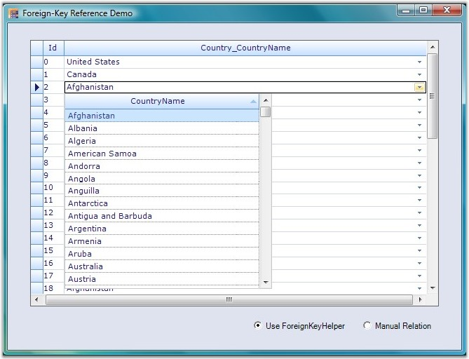

GridForeignKeyHelper class is used to set up foreign key relations to perform foreign key look ups. With this class, you can easily set up a foreign table with a single method call instead of implementing numerous steps.
The following code example illustrates how to use this class.
1. Using C#
|
[C#]
GridForeignKeyHelper.SetupForeignTableLookUp(gridGroupingControl1, "Country", countries, "CountryCode", "CountryName"); |
2. Using VB.NET
|
[VB.NET]
GridForeignKeyHelper.SetupForeignTableLookUp(gridGroupingControl1, "Country", countries, "CountryCode", "CountryName") |
 Note:
Note:
The first argument in this method is an instance of the Grid Grouping control.
The second argument is the column name of the Parent table's Value Member.
The third argument is the name of the Foreign table.
The fourth argument is the column name of the Child table's Value Member.
The fifth argument is the column name of the Child tables's Display Member.
The following screen shot illustrates Foreign Key Relations in the Grid Grouping control.

Figure 447: Grid Grouping control with Foreign Key Relations